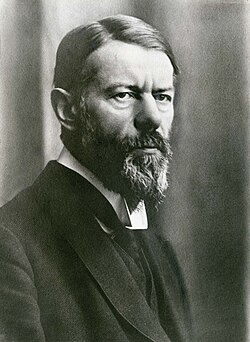

政治学概論Ⅰ《2025》
#5 民主主義と全体主義（１）（前回の積み残し）
![]()
KEYWORDS
- リベラル・デモクラシー；支配の類型；友敵論；自由と責任；全体主義
Ⅰ. 前回の振り返り（授業の感想）
授業の感想：選挙制度と政治意識
私が面白いと思った箇所は高校生の政治意識についての部分である。
この部分を選んだ理由は、政治的有効性感覚の形成において教育が大きな影響を与えにくいという部分が印象に残ったからである。教科書中心の授業では、政治を「覚えるもの」「勉強するもの」と捉えがちになり、政治への関心が薄れてしまう可能性があると感じた。実際に私自身もそのような経験があり、これは政治参加を避ける要因になりうると考えられる。生徒が主体的に政治を考えられるような工夫した授業の必要性を感じた（内坂さん）。
授業の感想：選挙制度と政治意識
日本は民意を問われる選挙が実質一年ごとに行われるなど、選挙を行いすぎている点。
授業やリーディングアサインメントを読む前は、選挙＝民意を問われる活動が行われているから、国民にとっても良いと思っていたけれど、頻度に行われることで、政治家もその場限りの票を集めるための発言になってしまう。また、選挙が多すぎるから政治の変化が大きく、国民が政治についていくことや、政党を理解することが大変ではないかと思った。さらに、選挙を行うにもお金がかかるから、何度も頻繁に選挙を行うことは決してプラスの面で捉えることはできないと感じた（髙尾さん）。
授業の感想：『関心領域』
家族の日常
夫は、ただ与えられた仕事をこなしているだけであり、妻は、子供の世話をしたりガーデニングをしているだけである。隣では、日々虐殺が行われているが、仕事をしているだけであり、家族と日常を過ごしているだけである。関心は自分たちの家庭であり、虐殺などどうでもよい。自分の価値観で言えば、さすがにこの家族は気狂いで、倫理観が欠如していると思うが、この関心のなさこそが、全体主義の本質であり、恐ろしさであると考える。したがって、日常こそ、風刺がきいていて面白い（興味深い）と思った（片山さん）。
授業の感想：『関心領域』
「関心領域」でアウシュビッツ収容所所長の妻がユダヤ人女性の服を着ていたシーン
この映画については事前に概要を知っている程度で、所長の妻たちはアウシュビッツと直接関わらず、平穏に暮らしているのだろうと考えていた。しかし実際には、妻がユダヤ人女性から奪われた衣服を当然のものとして試着し、修理に出す場面が描かれていた。こうした描写から、政治や不平等は意識的に目を背けることで日常から切り離すことができてしまうと感じた。だからこそ社会をより良くするためには、自らの関心領域を広げ、問題に正面から向き合う姿勢が必要だと考えた（角田さん）。
授業の感想：『関心領域』
日常の無関心が暴力になる
日常の無関心が暴力となってしまうという事を改めて感じた。収容所の隣で普通の家庭生活を送る家族の様子は、今の私から見れば異様なものであるが、昔は当たり前で何も疑問を抱かなかったということに恐ろしさを感じた。残虐な行為を直接描かず、静かな日常を映すことで、周辺に住む人々の関心外にあるということがわかった。私たちが普通だと考えていることも実は異常なのかもしれないと、関心を持って接していくべきであると感じた（泉水さん）。
授業の感想：『関心領域』
ヒューリスティック処理が無意識のうちに行われていることが重要だと思った
レジュメと「関心領域」から、ヒューリスティック処理は政党支持にとどまらず、差別的な心理・行動につながることがあると知ったから。「関心領域」に登場した家族の祖母が、塀の向こうから聞こえる音や声が気になって寝つけなかったり、家を出ていったりしたのは、ヒューリスティック処理が働いたからではないかと考えた。ヒューリスティック処理を回避して社会の分断が生じないようにするのは難しそうだと思った（橋本さん）。
（補足）『関心領域』
- ムービー ダイアリーズ「映画『関心領域』が怖い｜ネタバレ解説｜リンゴ・母親の行動・白黒カット・ラスト暗闇の意味まで考察レビュー」
Ⅱ. 大戦と革命のなかの政治学
リーディングアサインメント：『ナチスは「良いこと」もしたのか？』
多くの人びとはヒトラーを「悪の権化」と決めつける「教科書的」な見方に不満を抱き、「ナチスは良いこともした」といった「斬新」な主張に魅力を感じている点（110ページ）
この部分はナチスは良いこともしたと述べる人々の理由について述べられていて面白かった。特に「教科書的な説明への反発」や「自分だけが真実を知っている」といった感情が影響しているという指摘が面白かった。「歴史知識」は「過去に対する感情的イメージ」で「学んだ歴史知識をどのように解釈し、利用するか」を決定すると書いてあるように、歴史の受け止め方には個人の感情が大きく関わるという点を知ることができ、歴史を教える難しさを感じた（安達さん）。
リーディングアサインメント：『ナチスは「良いこと」もしたのか？』
私が今回のリーディングアサインメントで面白いと思った部分は、ナチスが行った数々の悪行について繰り返し教えられたことでそれを否認しようとする中でナチスへの肯定的な意見があるというところである。
私が面白いと感じた理由は私自身同じような経験をしたことがあるからである。例えば自分が苦手なものやことや自分が好きなものに対して自分の意見とは反対の考えを持っている人がどのように感じているのかを考えることで様々な物への理解を深めていくことができると感じ、自分が嫌いなものに対しての嫌悪の気持ちや好きなものに対する肯定の気持ちを強めることができると感じた。また、世間一般的に肯定されていないものに対して肯定的な気持ちを持とうとしてしまうこともあるので面白いと感じた（梅田さん）。
リーディングアサインメント：『ナチスは「良いこと」もしたのか？』
「断片的な〈事実〉から〈意見〉へと飛躍してしまう」111p
最近だと自分の詳しくないことや興味がなかったことについての情報がすぐ手に入る環境にあるため、自分だけが知っているかのような優越感に浸り、この現象が起きやすい状況にあるのではないかと考えた。大学で学んでいる資料による裏付けといった、根拠を示しながら議論をすることの重要性について感じることができた（喜多川さん）。
リーディングアサインメント：『ナチスは「良いこと」もしたのか？』
「学校的な価値観への反発が『教科書に書いていない真実』への盲信に直結している」(p111)という箇所が特に重要だと感じた。
正確な知識を知ろうとする理性よりも、「自分たちこそが真実を知っている」という優越感や感情が先行してしまう状況は危険だと感じた。過去を鵜呑みにせず批判的に考える姿勢は重要だが、それは感情ではなく、事実や論理に基づくものである必要があると思う。こうした姿勢を欠いたまま政治に向き合えば、根拠の薄い主張や分かりやすい敵を示す言説に流され、民主的な判断が歪められてしまうのではないかと考えた（角田さん）。
リーディングアサインメント：『ナチスは「良いこと」もしたのか？』
p112 間違いの指摘が「マウント行為」と受け取られるのは避けがたいところである。専門家による啓蒙活動にはやはり限界がある。
私たちは専門的な知識を身に付けていないから、SNSなどで専門家による分かりやすい説明を見たりするが、ネットワークが普及している現代だからこそ、それを「マウント行為」だと捉えてしまう人がいる驚いた。また、逆に炎上させることによって稼いでいる偽の専門家が存在しているから専門知識が軽視されるのではないかと感じた。専門家も非専門家もSNSの使い方に注意して行う必要があると再認識された（髙尾さん）。
リーディングアサインメント：『ナチスは「良いこと」もしたのか？』
p.110–111「ポリコレへの反発」
ナチス評価をめぐる議論が過去の歴史問題にとどまらず、現代の「ポリコレ批判」や「言論の自由」をめぐる感情と結びついて再生産されている点が明確に示されていたからである。価値観の押し付けへの反発が、ナチスの行為を相対化・正当化する言説につながり得るという指摘は、現代社会の分断や不満の構造を考える上で非常に示唆的だった。歴史認識の問題が、現在の政治的・社会的感情と密接に関係していることを強く意識させられた（山田さん）。
ウェーバー
- マックス・ウェーバー（1864-1920）
- 講演「仕事としての政治」（1919年1月28日）
- 仕事の原語ベルーフ＝生きるための仕事と使命を受けた仕事の二重の意味がある
- 混乱期の講演、悲観的な未来像
- バイエルン共和国の誕生（革命。1918年11月8日）：アイスナーが牽引。聴衆はアイスナーの急進的な改革への支持をウェーバーに求める（ウェーバーは拒否）

ウェーバー
ぼくたちの前にあるのは、夏の花盛りではなく、凍りついた暗闇と過酷さが支配する極北の夜です。いま外面的にどのグループが勝っても、そうです。というのも、なにもないところでは、カイザーだけでなく、プロレタリアートも権利を失っているからです。この夜は、ゆっくりと明けることでしょう。そのとき、いま見るところでは、こんなにも元気よくその春が咲き乱れている人たちのなかで、誰がまだ生きているでしょうか。そして、みなさん一人一人は、そのとき内面的にどうなっているでしょうか。気難しくなっているか、俗物になる、つまり世界と仕事を簡単に、いい加減に受け入れるか。あるいは、第三の、めずらしくないものとしての神秘的な現世逃避か（ウェーバー， (2018, pp. 214–215)）。
ウェーバー：支配の内的正当化
支配の内的正当化
- なぜ人は暴力で脅されていないのに支配を受け入れるのか？
- 伝統的支配
- 「カリスマ的」支配
- 合法的支配
ウェーバー：支配の内的正当化
支配の内的正当化
- 伝統的支配：「永遠の昨日」の権威
- 神聖化された習俗
- 「カリスマ的」支配：個人的なコミットメントと信頼関係からなる支配
- 政治の「リセット」を託される
- 中核：預言者；デマゴーグ；政党リーダー（革命期のリーダーを想起）
- 「使命を与えられた人」として人びとが受け入れる
- 合法的支配：法規の妥当性に対する信頼
- 価値の対立による混乱を縮小化させる
- 中核：法規・法令の執行を司る行政スタッフ
- 実質合理性と形式合理性（後述）
ウェーバー：支配の内的正当化
- 伝統的支配と合法的支配
- 日常的な安定性と継続性にもとづき、それぞれの支配の基盤を脅かすような諸価値の対立を顕在化させないことに利害関心をもつ
- カリスマ的支配
- 価値の対立を顕在化させ、それを調停させる能力を示すことで支配権を確立しようとする（野口 (2014, pp. 35–36)）
ウェーバー：政治家に必要な資質
政治家に必要な資質
- 情熱：一つの「なにごとか」へのコミットメント
- 権力や人気獲得それ自体を自己目的化するのではなく、ある種の使命感を伴う情熱が必要
- Cf. 革命のような「不毛な興奮」は対象外
- 責任感
- 責任倫理：自己の行為に対する倫理（責任）感覚
- 信条倫理：自己の信条に対する倫理感覚
- 結果責任への感覚が弱い
- 責任倫理と信条倫理は相互補完的
- 目測能力：冷静さ；自分を相対的に見る力（虚栄心の克服）
ウェーバー：政治家に必要な資質
政治家に必要な資質
「距離感を失う」ことは、純粋にそれだけで、どんな政治家にとっても大罪の一つです。そして、ドイツの若い知識人のあいだでこうした資質が育成されるとき、彼らは政治的無能力という判決を受けます。というのも、熱い情熱とクールな目測能力が互いに一つの魂のなかでいかにまとめ上げることができるかが、まさに問題だからです（ウェーバー， (2018, p. 180)）。
ウェーバー：政治家に必要な資質
政治家に必要な資質
なにごとかにコミットしない態度は、現実の権力ではなく、権力のきらびやかな仮象を追求させやすく、また無責任は権力をただそれ自身のために、内容となる目的を抜きにして享受させやすいのです。権力はあらゆる政治の不可避の手段であり、また権力の追求はあらゆる政治の原動力です。そうであるにもかかわらず、あるいはむしろ、まさにそうであるがゆえに、成り上がり者がやるように権力をふりかざしたり、虚栄を張って権力感情に自己陶酔したり、そもそも純粋に権力それ自身を崇拝したりすること以上に、政治的な力を破滅的に歪めてしまうものはないのです（ウェーバー， (2018, pp. 181–182)）。
ウェーバー：政治家に必要な資質
政治家に必要な資質
剥き出しの「権力政治家（Machipolitiker）」というのがいます。ドイツでも熱心に行われているあるカルトが、これを神聖化しようとしている。こうした「権力政治家」は力強い印象を与えるかもしれませんが、しかし実際のところ空度で無意味に終わります。その点で「権力政治」の批判者たちは完全に正しい。こうした信条の持ち主が突然、内面的に崩壊するということに直面して、こうした威張りちらした、しかしまったくの空虚なジェスチャーの背後に、いかなる内面的な弱さと無力さが隠されているかを、ぼくたちは身をもって知ることができました。この空虚なジェスチャーは、人間の行為の意味に対する、きわめて貧相で、表層的な尊大さの所産です。すべての行い、特に政治的な行いは、実のところ悲劇に巻き込まれています。この尊大さは、そうした悲劇についての自覚とは、まったく無関係なのです（ウェーバー， (2018, pp. 181–182)）。
ウェーバー：政治家に必要な資質
政治家に必要な資質
政治というのは、硬い板に力強く、ゆっくりと穴をあけていく作業です。情熱と目測能力を同時にもちながら掘るのです。この世界で何度でも不可能なことに手を伸ばさなかったとしたら、人は可能なことすら成し遂げることはなかった。これはもちろん絶対に正しいし、歴史的な経験はすべてこのことを証明しています。しかし、それをなすことができる人は、導く人でなければならず、またそれだけでなくーとても簡単な意味においてー英雄でなければならないのです。（原文改行）そして、導く人でも英雄でもない人も、あらゆる希望がだめになってももちこたえるハートの強さで、いますぐ武装しなければなりません。さもなければ、今日可能なことすら実現できない。自分の立っているところから見て、自分が世界のために差し出そうとするものに対して、この世界があまりに愚かでゲスだとしても、それで心が折れてしまうことなく、こうしたことすべてに対してすら「それでも」と言うことができる自信のある人だけが、政治への「使命」をもっているのです（ウェーバー， (2018, pp. 217–218)）。
ウェーバー：形式合理性と実質合理性
形式合理性と実質合理性
- 形式合理性
- 一定の正しい手続きを踏んだ決定を合理的とみなす
- 官僚制支配の正当化
- 政官関係における政に対する官の防御
- 問題点
- 目的（「何のために」）という問いが忘れられる
- 状況の変化に適応できず
ウェーバー
形式合理性と実質合理性
- 実質合理性
- 目的や手段を満たす決定を合理的とみなす
- 恣意的な意思が介入する余地あり
- 形式合理性への疑義が生じ、価値を問い直す場合に必要
- 価値は通常、対立的であるため、価値対立を収めるためにカリスマ的支配が要請される
- Cf. 「政治とは神々の争いである」（ウェーバー）
シュミット
- カール・シュミット（1888-1985）
- 政治は「友か敵か」の戦い（『政治的なものの概念』初版1927年、第2版1932年）
- 敵：自分の存在のあり方を否定する存在
- 自由主義（道徳的・人道主義的思考）が政治的敵対性に無関心であることに警告
- 自由主義的な中立主義では政治を回避できない
- Cf. ウェーバーの形式合理性
- シュミットにとっての敵
- 共産主義（ソビエト連邦）；抽象的理念（例：人類）
シュミット
- 権力者は合法的権力に加え、その合法性を超える「政治的剰余価値」をもつ
- 具体的な状況に応じて法を解釈し、執行できるため
- 「過半数の獲得はナチス党に予測できないほどの「政治的余得」を与えることになる」
合法的に権力を所有した者が、すべての人に平等に開かれていたはずの合法性の門を自らの背後で閉ざしてしまう危険が起こりうるのである。法を手にする者は、つねに法以上のものをも手にすることができる。価値中立的な法秩序は、憲法の敵が合法的手段を通じて権力を奪取する「合法的革命」を防ぐことはできない。単なる合法性はその中立性において自殺するのである（大竹 (2014, p. 189)）。
シュミット
- 具体的秩序＞自由主義的法治国家
- ナチス党への入党
- シュミットの政治学は具体的秩序の内実を欠くため、既成権力を受け入れやすい
- Cf. 丸山眞男「『現実』主義の陥穽」
- 「現実に力を持っている者」に従うことを「現実的」「大人の判断」だと思い込むと、その力を批判する視点が失われる
シュミット > 議会主義
議会主義
- 自由主義と民主主義は一対ではない
- 自由主義が民主主義の決断力を弱めると批判
- 議会主義は自由主義に由来する制度
- 民主主義と議会主義は同じではない
- 議会なしの民主主義；共和国大統領による民主主義
- 民主主義の基盤は同一性
- Cf. 自由主義の基盤は多様性
- 民主主義と議会主義は同じではない
シュミット > 議会主義
- ワイマール議会
- 公開の討論の理念は、19世紀以降の選挙権拡大のなかで形骸化
- （本当の敵ではない）内政上の敵を敵視し攻撃
- 同質性に依拠しない議会：友と敵を区別できず
- 公開の討論の理念は、19世紀以降の選挙権拡大のなかで形骸化
- 例外状態；決断；喝采が必要（『政治神学』1922年）
- 主権者：例外状況において決定権をもつ者
- Cf. 国民主権
シュミット > 議会主義
むしろ例外状態のためには、原理的に無制約な権限、すなわち現行秩序全体の停止が必要である。この例外状態が現れたならば、国家は存続するのに対し、法は後退するのは明らかである。例外状態とは、いつでも無政府状態や混沌とは全く別の物だから、法秩序は存在しないとしても、法学的意味では、相変わらず秩序は存在する。ここでは、国家の存在は法規範の効力に対して疑いなく優位する。決定は、あらゆる規範的制約から解き放たれ、本来の意味で絶対的になる。例外事例では、いわゆる自己保存権に従い、国家は法を停止する（シュミット (2024, pp. 20–21)）。
エーリッヒ・フロム
- エーリッヒ・フロム（1900-1980）
- 主著：『自由からの逃走』（1941年）
- 自由とは孤独や責任を受け止めること
- 他方で、自由は重荷である
- ➡ 同調による責任回避
- 周囲と同じ行動をとれば責任を問われない
エーリッヒ・フロム
本書の主題は、次の点にある。すなわち近代人は、個人に安定をあたえると同時にかれを束縛していた前個人的社会の総からは自由になったが、個人的自我の実現、すなわち個人の知的な、感情的な、また感覚的な諸能力の表現という積極的な意味における自由は、まだ獲得していないということである。自由は近代人に独立と合理性とをあたえたが、一方個人を孤独におとしいれ、そのため個人を不安な無力なものにした。この孤独はたえがたいものである。かれは自由の重荷からのがれて新しい依存と従属を求めるか、あるいは人間の独自性と個性とにもとづいた積極的な自由の完全な実現に進むかの二者択一に迫られる。本書は予測よりもむしろ診断──解決よりもむしろ分析──ではあるが、その結果はわれわれの行為の進路に一つの方向をあたえている。なぜなら、全体主義がなぜ自由から逃避しようとするのかを理解することが、全体主義的な力を征服しようとするすべての行為の前提であるから（フロム (1951, p. 4)）。
ハンナ・アレント
- ハンナ・アレント（1906-1975）
- ドイツ系ユダヤ人
- 第2次世界大戦中にナチスの強制収容所から脱出しアメリカへ亡命
- 主著：『全体主義の起源』（The Origins of Totalitarianism, 1951年）
- ナチス現象を全体主義という概念で分析
- 全体主義は暴政や独裁とは違う新しい政治現象とみなす
- Cf. 『公共』（東京書籍）では公共空間や「活動」の文脈で紹介される
ハンナ・アレント > 全体主義
⑴ 全体主義の特徴
- 個に対する全体の優位
- 私生活の否定
- あらゆる権力の動員
⑵ 全体主義の条件
- 政治的組織を要求する大衆が存在すれば、どこでも成立可能
- 大衆：
- 共通の利害なし
- 階級意識なし
- 公的問題に無関心
- ➡ 統治者が簡単に操作可能
- 大衆：
ハンナ・アレント > 全体主義
全体主義運動は、いかなる理由からであれ政治的組織を要求する大衆が存在するところならばどこでも可能である。大衆は共通の利害で結ばれていないし、特定の達成可能な有限の目標を設定する個別的な階級意識を全く持たない。「大衆」という表現は、人数が多すぎるか公的問題に無関心すぎるかのために、人々がともに経験しともに管理する世界に対する共通の利害を基盤とする組織、すなわち政党、利益団体・・・・労働組合・・・などに自らを構成することをしない人々の集団であればどんな集団にも当てはまるし、またそのような集団についてのみ当てはまる（アーレント (1981, vols. 3, 10))